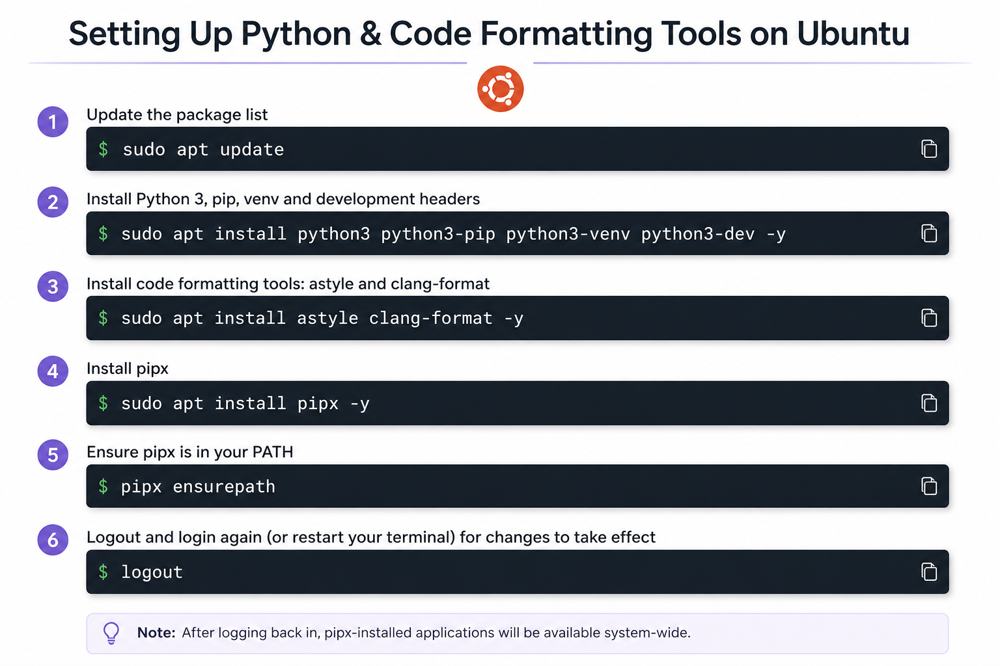
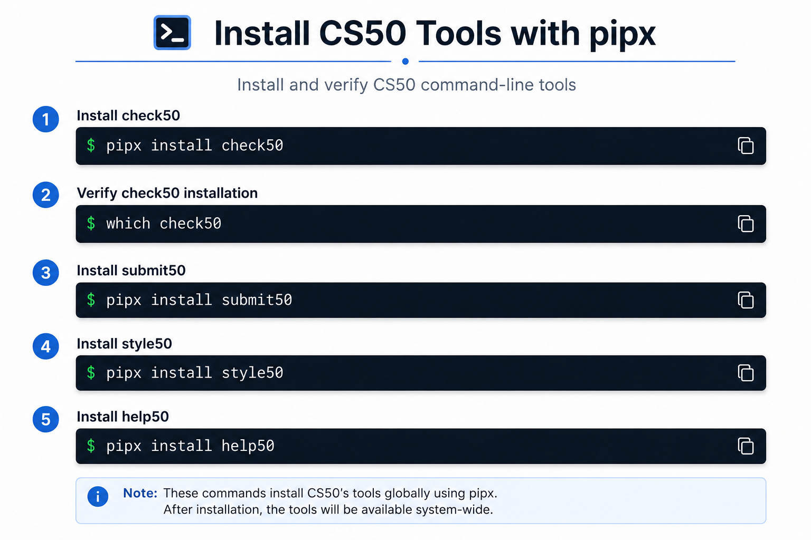
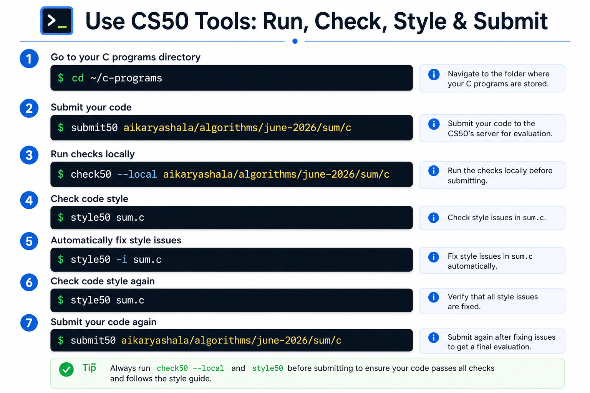

Setting Up and Using CS50 Tools
Three reference cards, in order: prepare your Ubuntu machine, install the CS50 command-line tools with pipx, then run, check, style and submit your code. Click any card to open it full size.
1 Set up Python & formatting tools on Ubuntu

2 Install CS50 tools with pipx

3 Use CS50 tools: run, check, style & submit

Tip: always run check50 --local and style50 before submit50, so your code passes the checks and follows the style guide before the final evaluation.